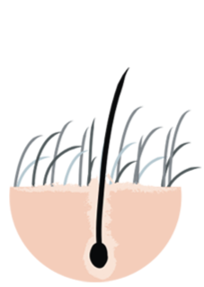
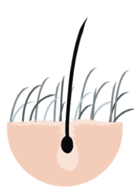
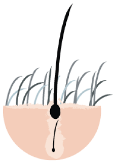

מחזור התפתחות השיערה


הצמיחה
הצמיחה
אנאגן
השערה צומחת מתוך הזקיק עד שמגיע לאורכה הקבוע, נמשך כ-3 שנים בממוצע, אורך שלב זה הוא שקובע את האורך המקסימלי של השערה. הזמן המדויק משתנה מאדם לאדם ותלוי בגורמים רבים כמו גיל, בריאות, מוצא, גנטיקה ועוד.

המנוחה
המנוחה
קטאגן
שלב המנוחה של השערה בו נעצרת הצמיחה, בשלב זה השיער נמצא במצב סטאטי במשך שלושה שבועות.
השערה מפסיקה למעשה לצמוח, השורש מצטמק, והשערה עולה במעלה הזקיק, שאף הוא עצמו מתכווץ.

הנשירה והצמיחה
הנשירה והצמיחה
מחדש טלוגן
כתשעה אחוזים מכלל השערות בקרקפת מצויים בשלב הנשירה. השיער לא נושר ביום אחד, אלא עובר תהליך של שלושה חודשים, השערה מחוברת באופן חלש לזקיק ולאחר זמן מה היא נושרת או נבעטת מתוך הזקיק כאשר ממנו צומח שיער חדש.